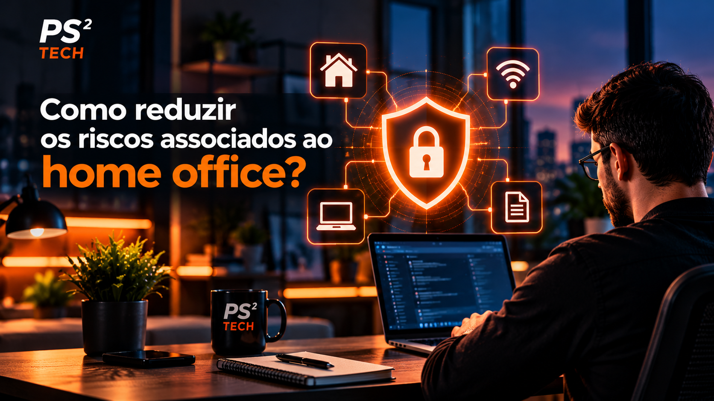

Quando as equipes trabalham fora do escritório, passam a usar diferentes redes, locais e dispositivos para acessar recursos corporativos. Sem orientações e controles adequados, isso pode aumentar a exposição a tentativas de fraude, roubo de credenciais e perda de dados.
Algumas medidas simples ajudam a reduzir esses riscos e a criar uma rotina de trabalho remoto mais segura.

Boas práticas para proteger o trabalho remoto
- Use uma VPN corporativa. Forneça uma solução aprovada pela empresa para que as equipes acessem os recursos internos por uma conexão protegida. Oriente quando e como utilizá-la.
- Conceda apenas os acessos necessários. Limite permissões conforme a função de cada pessoa e revise os acessos periodicamente. Sempre que possível, habilite autenticação multifator.
- Treine a equipe para reconhecer golpes. Reforce os cuidados com mensagens inesperadas, links e arquivos de origem desconhecida. Em caso de dúvida, a pessoa deve confirmar por outro canal e avisar a TI.
- Mantenha sistemas e aplicativos atualizados. Instale atualizações de segurança nos computadores e dispositivos móveis assim que forem disponibilizadas, seguindo as políticas da empresa.
- Proteja todos os dispositivos. Inclua notebooks, smartphones e tablets no gerenciamento e na solução de segurança corporativa. Defina também procedimentos para perda ou roubo de um equipamento.
VPN e ferramentas de proteção são parte de uma estratégia mais ampla: devem acompanhar controles de acesso, atualizações, políticas claras e orientação contínua para as equipes. A Kaspersky também reúne recomendações para empresas que adotam o trabalho remoto em seu artigo sobre home office e segurança.
Quer revisar a segurança dos acessos e dispositivos da sua empresa? A PS² Tech pode ajudar a avaliar as necessidades e planejar as próximas medidas.